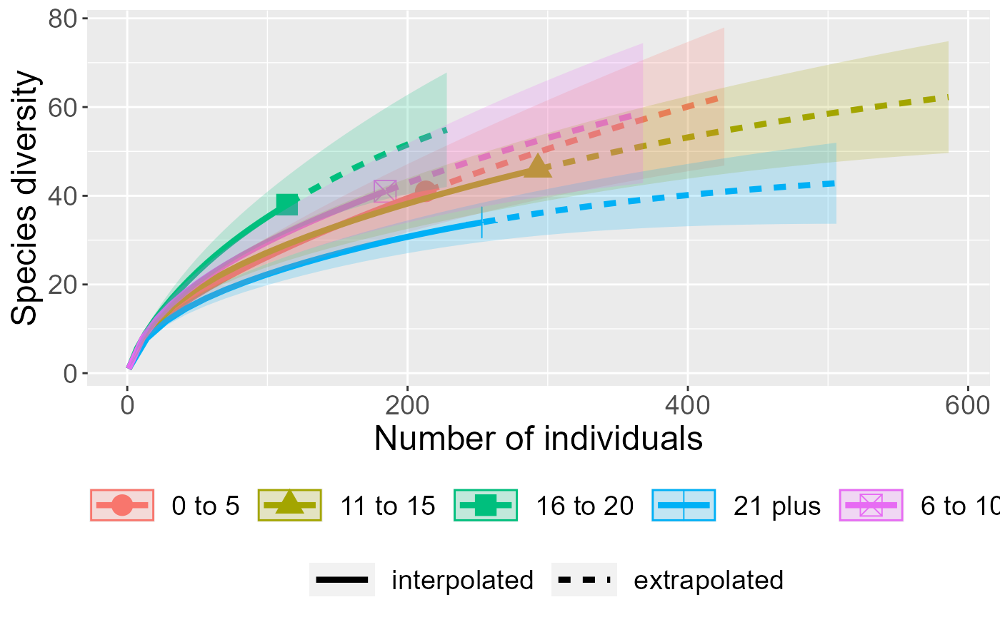

Tutorial
Elisabeth Pigott
11/16/2020
00_package.RmdInstall the package.
devtools::install_github("elisabethpigott/pigott.package")Load the package. The tutorial R Markdown can be found in vignettes.
library(pigott.package)Converting a species community dataframe to a matrix for further analysis
This function will convert a species community dataframe and transform it into a matrix. You can then use this matrix to plug into community analysis functions. You must use a dataframe with only Species, Site_names, and Count or Abundance in three separate columns. For my example data, formal site names are irrelevant, so I use Mo_since_burn_grouped instead of Site_names as my independent variable. The output will be a matrix of spread out species community data with Species in rows and Sites in columns.
## -- Attaching packages --------------------------------------- tidyverse 1.3.0 --## v ggplot2 3.3.2 v purrr 0.3.4
## v tibble 3.0.4 v dplyr 1.0.2
## v tidyr 1.1.2 v stringr 1.4.0
## v readr 1.4.0 v forcats 0.5.0## -- Conflicts ------------------------------------------ tidyverse_conflicts() --
## x dplyr::filter() masks stats::filter()
## x dplyr::lag() masks stats::lag()
bees <- read_csv("../inst/extdata/bee_fxndata.csv")##
## -- Column specification --------------------------------------------------------
## cols(
## Species = col_character(),
## Mo_since_burn_grouped = col_character(),
## Count = col_double()
## )
print(bees)## # A tibble: 1,057 x 3
## Species Mo_since_burn_grouped Count
## <chr> <chr> <dbl>
## 1 Melissodes bimaculata 11 to 15 1
## 2 Melissodes bimaculata 11 to 15 1
## 3 Melissodes communis 11 to 15 1
## 4 Melissodes bimaculata 11 to 15 1
## 5 Melissodes bimaculata 11 to 15 1
## 6 Halictus ligatus/poeyi 11 to 15 1
## 7 Melissodes communis 11 to 15 1
## 8 Bombus griseocollis 11 to 15 1
## 9 Melissodes bimaculata 11 to 15 1
## 10 Melissodes trinodis 11 to 15 1
## # ... with 1,047 more rows
bmatrix <- beematrix(bees, Species, Mo_since_burn_grouped, Count) Check to see how your matrix looks:
head(bmatrix)## 0 to 5 11 to 15 16 to 20 21 plus 6 to 10
## [1,] 0 1 0 1 1
## [2,] 0 0 1 0 0
## [3,] 0 0 1 0 0
## [4,] 0 0 0 0 1
## [5,] 0 0 0 1 0
## [6,] 0 0 0 0 1Species diversity (Hill Numbers) analysis using a community data matrix
This function uses iNEXT to report the effective number of species as Hill numbers of the order q. There are three diversity orders (0-2) of q: richness, Shannon diversity, and Simpson diversity. The function requires a matrix as the input argument and the output will be a ggplot showing species diversity across the number of individuals caught. This is important to see, as I am collecting species at sites with different burn histories to see if there is an effect of time since burn on bee communities.
We will be analyzing Shannon diversity (q = 1) using the shannon function:
## Warning in if (class(x) == "numeric") {: the condition has length > 1 and only
## the first element will be used## Warning in if (class(x) == "integer") {: the condition has length > 1 and only
## the first element will be used## Warning in if (class(x) == "list") {: the condition has length > 1 and only the
## first element will be used## Warning in if (class(x)[1] == "matrix" | class(x) == "data.frame") {: the
## condition has length > 1 and only the first element will be used## Warning in if (class(x) == "numeric") {: the condition has length > 1 and only
## the first element will be used## Warning in if (class(x) == "integer") {: the condition has length > 1 and only
## the first element will be used## Warning in if (class(x) == "list") {: the condition has length > 1 and only the
## first element will be used## Warning in if (class(x)[1] == "matrix" | class(x) == "data.frame") {: the
## condition has length > 1 and only the first element will be used## Warning in if (class(x) == "numeric") {: the condition has length > 1 and only
## the first element will be used## Warning in if (class(x) == "integer") {: the condition has length > 1 and only
## the first element will be used## Warning in if (class(x) == "list") {: the condition has length > 1 and only the
## first element will be used## Warning in if (class(x)[1] == "matrix" | class(x) == "data.frame") {: the
## condition has length > 1 and only the first element will be used## Warning in if (class(x) == "numeric" | class(x) == "integer") {: the condition
## has length > 1 and only the first element will be used## Warning in if (class(x) == "list") {: the condition has length > 1 and only the
## first element will be used## Warning in if (class(x)[1] == "matrix" | class(x) == "data.frame") {: the
## condition has length > 1 and only the first element will be used
shannonplotThe other two functions, richness and Simpson, can also be analyzed, but we will not be executing the code during this presentation. I will drop the code below if you want to look at the richness and Simpson plots yourself.
## Warning in if (class(x) == "numeric") {: the condition has length > 1 and only
## the first element will be used## Warning in if (class(x) == "integer") {: the condition has length > 1 and only
## the first element will be used## Warning in if (class(x) == "list") {: the condition has length > 1 and only the
## first element will be used## Warning in if (class(x)[1] == "matrix" | class(x) == "data.frame") {: the
## condition has length > 1 and only the first element will be used## Warning in if (class(x) == "numeric") {: the condition has length > 1 and only
## the first element will be used## Warning in if (class(x) == "integer") {: the condition has length > 1 and only
## the first element will be used## Warning in if (class(x) == "list") {: the condition has length > 1 and only the
## first element will be used## Warning in if (class(x)[1] == "matrix" | class(x) == "data.frame") {: the
## condition has length > 1 and only the first element will be used## Warning in if (class(x) == "numeric") {: the condition has length > 1 and only
## the first element will be used## Warning in if (class(x) == "integer") {: the condition has length > 1 and only
## the first element will be used## Warning in if (class(x) == "list") {: the condition has length > 1 and only the
## first element will be used## Warning in if (class(x)[1] == "matrix" | class(x) == "data.frame") {: the
## condition has length > 1 and only the first element will be used## Warning in if (class(x) == "numeric" | class(x) == "integer") {: the condition
## has length > 1 and only the first element will be used## Warning in if (class(x) == "list") {: the condition has length > 1 and only the
## first element will be used## Warning in if (class(x)[1] == "matrix" | class(x) == "data.frame") {: the
## condition has length > 1 and only the first element will be used
richnessplot
## Warning in if (class(x) == "numeric") {: the condition has length > 1 and only
## the first element will be used## Warning in if (class(x) == "integer") {: the condition has length > 1 and only
## the first element will be used## Warning in if (class(x) == "list") {: the condition has length > 1 and only the
## first element will be used## Warning in if (class(x)[1] == "matrix" | class(x) == "data.frame") {: the
## condition has length > 1 and only the first element will be used## Warning in if (class(x) == "numeric") {: the condition has length > 1 and only
## the first element will be used## Warning in if (class(x) == "integer") {: the condition has length > 1 and only
## the first element will be used## Warning in if (class(x) == "list") {: the condition has length > 1 and only the
## first element will be used## Warning in if (class(x)[1] == "matrix" | class(x) == "data.frame") {: the
## condition has length > 1 and only the first element will be used## Warning in if (class(x) == "numeric") {: the condition has length > 1 and only
## the first element will be used## Warning in if (class(x) == "integer") {: the condition has length > 1 and only
## the first element will be used## Warning in if (class(x) == "list") {: the condition has length > 1 and only the
## first element will be used## Warning in if (class(x)[1] == "matrix" | class(x) == "data.frame") {: the
## condition has length > 1 and only the first element will be used## Warning in if (class(x) == "numeric" | class(x) == "integer") {: the condition
## has length > 1 and only the first element will be used## Warning in if (class(x) == "list") {: the condition has length > 1 and only the
## first element will be used## Warning in if (class(x)[1] == "matrix" | class(x) == "data.frame") {: the
## condition has length > 1 and only the first element will be used
simpsonplot
Analysing community data using NMDS (non-metric multidimensional scaling)
This function uses metaMDS to perform an NMDS ordination on a community dataset. Nonmetric multidimensional scaling is typically used in community ecology to iteratively find dissimilarity relations between samples among all sites sampled at. For my community dataset, this function will show me if my sites are dissimilar from one another by the relative abundances and species richness I collected from each site. The input must be a data frame with the community data spread out with species as columns and sites as rows.
First, we need to transpose my original matrix so that species are in columns and sites are in rows. Then, we need to formally convert the matrix into a data frame. For whatever reason, metaMDS and iNEXT have opposite input matrix formats.
transbmatrix <- t(bmatrix)
transbmatrix <- as.data.frame(transbmatrix)Now I can compute my function.
## Loading required package: permute## Loading required package: lattice## This is vegan 2.5-7
bee.mds <- nmdsplot(transbmatrix, distance = "bray", autotransform = "FALSE")## Run 0 stress 0
## Run 1 stress 0.1071908
## Run 2 stress 0
## ... Procrustes: rmse 0.04053173 max resid 0.06078164
## Run 3 stress 0
## ... Procrustes: rmse 0.1398716 max resid 0.198296
## Run 4 stress 0
## ... Procrustes: rmse 0.09037116 max resid 0.1327053
## Run 5 stress 0
## ... Procrustes: rmse 0.03956427 max resid 0.0558007
## Run 6 stress 0
## ... Procrustes: rmse 0.09829592 max resid 0.14555
## Run 7 stress 0
## ... Procrustes: rmse 0.04952075 max resid 0.06847327
## Run 8 stress 0
## ... Procrustes: rmse 0.05919785 max resid 0.07942612
## Run 9 stress 0
## ... Procrustes: rmse 0.06947552 max resid 0.09972349
## Run 10 stress 0.2297529
## Run 11 stress 0
## ... Procrustes: rmse 0.07224829 max resid 0.1064512
## Run 12 stress 0
## ... Procrustes: rmse 0.09782207 max resid 0.1384628
## Run 13 stress 0
## ... Procrustes: rmse 0.06840318 max resid 0.1064699
## Run 14 stress 0.2297529
## Run 15 stress 0
## ... Procrustes: rmse 0.0531884 max resid 0.09334175
## Run 16 stress 0.2297529
## Run 17 stress 0
## ... Procrustes: rmse 0.0756513 max resid 0.1296987
## Run 18 stress 0
## ... Procrustes: rmse 0.05404659 max resid 0.09547251
## Run 19 stress 0
## ... Procrustes: rmse 0.0632245 max resid 0.09952305
## Run 20 stress 0
## ... Procrustes: rmse 0.04539396 max resid 0.07841639
## *** No convergence -- monoMDS stopping criteria:
## 16: stress < smin
## 1: stress ratio > sratmax
## 3: scale factor of the gradient < sfgrmin## Warning in metaMDS(x, distance = "bray", autotransform = FALSE): stress is
## (nearly) zero: you may have insufficient data
bee.mds## $sites
## NMDS1 NMDS2
## 0 to 5 -0.66132298 -0.190748443
## 11 to 15 -0.06963354 -0.559307273
## 16 to 20 -0.44621626 0.560938480
## 21 plus 0.71815194 -0.006181257
## 6 to 10 0.45902083 0.195298493
##
## $species
## NMDS1 NMDS2
## V1 0.52783099 -0.146539074
## V2 -0.69427462 1.228330988
## V3 -0.69427462 1.228330988
## V4 0.66248372 0.493738494
## V5 1.05086627 0.088953685
## V6 0.66248372 0.493738494
## V7 0.28104726 0.197911458
## V8 0.97318976 0.169910647
## V9 0.63953913 -0.151448185
## V10 -0.12428978 0.160504502
## V11 -0.12985702 -1.022309401
## V12 0.57857695 -0.355551549
## V13 0.26631335 -0.264285453
## V14 -0.69427462 1.228330988
## V15 0.46050462 -0.466677858
## V16 -0.12985702 -1.022309401
## V17 -0.18635661 -0.097788297
## V18 -0.01252002 0.281363748
## V19 -0.26144971 -0.003540956
## V20 -1.01667397 -0.281852776
## V21 -0.41206582 0.103010794
## V22 -0.17709513 0.105942859
## V23 0.72507384 -0.036421237
## V24 0.68577715 -0.083475697
## V25 0.74488310 0.102400382
## V26 0.56149417 0.013530318
## V27 -0.05310895 -0.374255604
## V28 0.09769599 0.281096395
## V29 0.26631335 -0.264285453
## V30 -0.12985702 -1.022309401
## V31 0.76397565 0.075713543
## V32 -0.12985702 -1.022309401
## V33 0.66248372 0.493738494
## V34 -0.69427462 1.228330988
## V35 -0.69427462 1.228330988
## V36 -1.01667397 -0.281852776
## V37 1.05086627 0.088953685
## V38 0.46050462 -0.466677858
## V39 -0.12985702 -1.022309401
## V40 -0.41206582 0.103010794
## V41 -0.85547430 0.473239106
## V42 -0.36308143 0.411630745
## V43 -0.03188824 -0.405069497
## V44 -0.69427462 1.228330988
## V45 -1.01667397 -0.281852776
## V46 -0.69427462 1.228330988
## V47 -0.90920752 0.221541812
## V48 -0.57326550 -0.652081088
## V49 -0.69427462 1.228330988
## V50 0.20763500 0.350999740
## V51 0.66248372 0.493738494
## V52 -1.01667397 -0.281852776
## V53 0.23222534 0.100279801
## V54 0.85667499 0.291346089
## V55 -0.43568487 0.667136923
## V56 -0.01589545 0.861034741
## V57 0.66248372 0.493738494
## V58 0.26371741 -0.651888372
## V59 0.09769599 0.281096395
## V60 -0.57326550 -0.652081088
## V61 -0.69427462 1.228330988
## V62 0.07557821 0.098325091
## V63 0.66248372 0.493738494
## V64 -0.03188824 -0.405069497
## V65 0.66248372 0.493738494
## V66 -0.69427462 1.228330988
## V67 0.66248372 0.493738494
## V68 -1.01667397 -0.281852776
## V69 -0.09649529 0.483488800
## V70 -1.01667397 -0.281852776
## V71 -0.12985702 -1.022309401
## V72 -0.12985702 -1.022309401
## V73 -1.01667397 -0.281852776
## V74 -1.01667397 -0.281852776
## V75 -1.01667397 -0.281852776
## V76 -0.41871623 -0.355118865
## V77 -0.48740282 0.779375736
## V78 0.01231393 0.284180903
## V79 -0.45975836 -0.542329215
## V80 -0.69427462 1.228330988
## V81 -0.47194470 -0.580101901
## V82 -1.01667397 -0.281852776
## V83 -0.17719327 0.510972774
## V84 0.66248372 0.493738494
## V85 -0.52399789 -0.693217568
## V86 1.05086627 0.088953685
## V87 -0.59021007 -0.359572172
## V88 -0.68614902 -0.201953011
## V89 0.67659755 -0.053210250
## V90 -0.42546267 -0.775490526
## V91 -0.12985702 -1.022309401
## V92 -1.01667397 -0.281852776
## V93 0.51129546 -0.102177738
## V94 0.11970037 0.050364448
##
## attr(,"class")
## [1] "ordiplot"These data show that sites burned 6 to 10 months ago are more similar to sites burned 21 plus months ago. Sites burned 0 to 5 months ago have little species richness. My species checklist is still a work in progress, however.